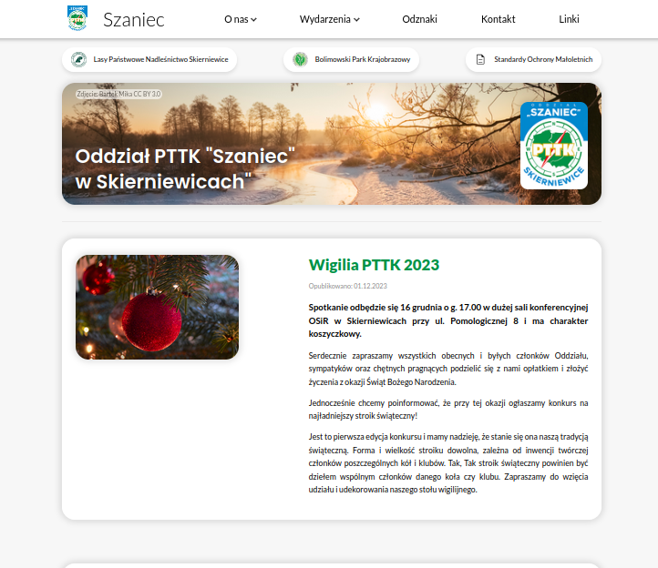
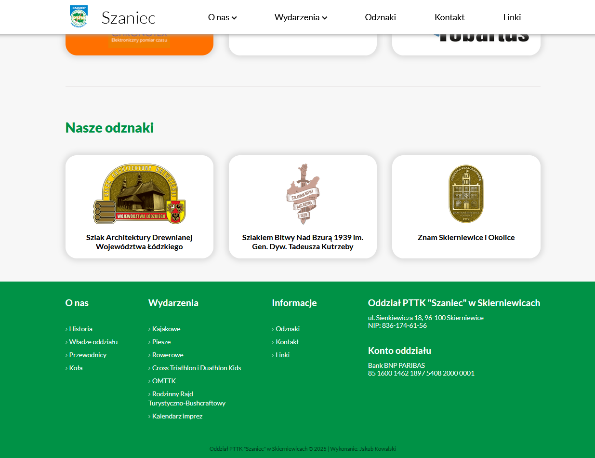
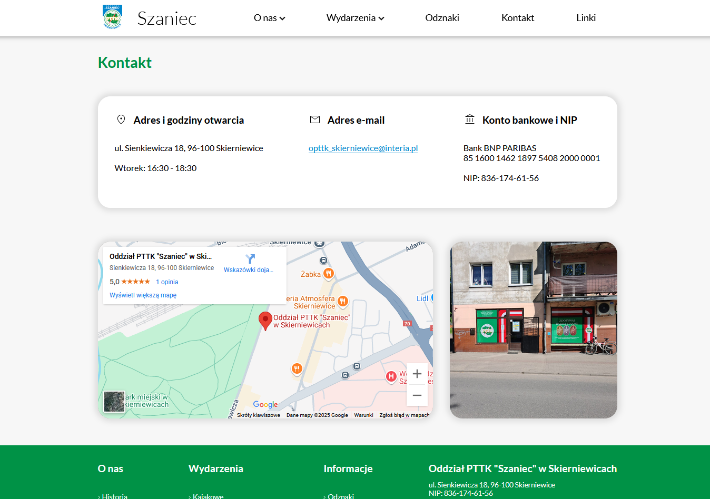

Tutaj zamieściłem swoje poboczne projekty niezwiązane z grami wideo.
Strona internetowa PTTK Oddział "Szaniec" w Skierniewicach
Projekt strony internetowej. Zobacz cały (jeszcze nie skończony) projekt na moim Githubie.



Opis
Prosta, funkcjonalna oraz nieobciążająca przesadnie urządzenia i łącza internetowego strona internetowa. Projekt miał nawiązywać do klasycznego wyglądu poprzedniej strony, ale oferować zarówno świeże i nowoczesne podejście.
Strona wymaga jeszcze ostatnich szlifów oraz przygotowania wersji mobilnej, więc nie jest jeszcze widoczna w internecie.
Oprogramowanie i narzędzia
HTML | CSS | Figma